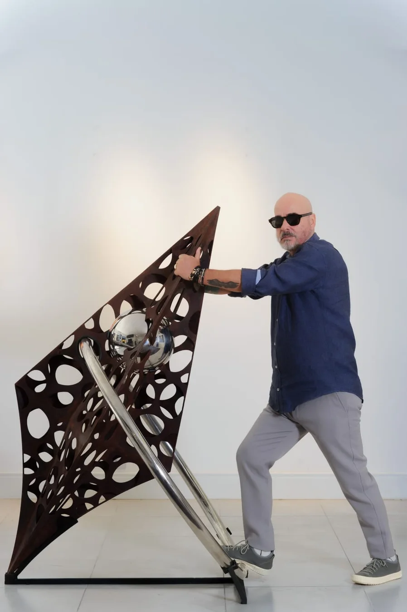

Ateliê · Alphaville, São Paulo
Entre o aço e a poesia da forma.
Três décadas de indústria transformadas em escultura, pintura, vidro e luz. Obras que nascem da precisão da máquina e terminam na leveza do gesto.
Obras em destaque
Matéria que acende.
- 40obras no acervo
- 29exposições e eventos
- 3países: Brasil, EUA e Uruguai
- 30+anos de indústria e engenharia
Acervo
Todas as obras

Sobre o artista
Um buscador.
Hermes Santos é artista visual e designer, com uma trajetória marcada por uma formação singular. Com base técnica em mecânica e mais de três décadas na manufatura automotiva, desenvolveu sua prática artística de modo autodidata, a partir da observação direta dos materiais e da experimentação com os processos de transformação da matéria.
Fundador da Modefer, referência no setor de autopeças, ele usa a experiência em gestão e engenharia para levar tecnologias do seu parque industrial — robótica, corte a laser e manufatura aditiva — para fins estéticos.
Ele define seu método como o de um buscador. A disciplina e a precisão da indústria pesada se fundem ao interesse por formas orgânicas e pela fluidez, em obras que exploram a dualidade entre a rigidez técnica e a leveza visual.
Vive e trabalha em São Paulo. Sua produção vai de esculturas em aço e latão a pinturas, trabalhos em vidro e instalações multimídia, e integra coleções privadas e exposições internacionais.
Exposições e prêmios
De São Paulo a Nova York.
Honrarias
Imprensa
Na imprensa
Galeria Hermes Santos